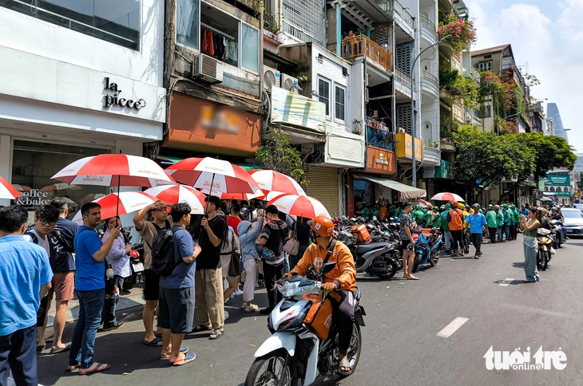

Sau khi báo Tuổi Trẻ đăng bài "TP.HCM: Chủ tịch phường, xã chịu trách nhiệm nếu vỉa hè bị lấn chiếm", bạn đọc gửi về rất nhiều chia sẻ cho thấy việc này rất cần thiết. Theo nhiều bạn đọc, việc giữ vỉa hè thông thoáng là điều kiện tiên quyết để thành phố phát triển văn minh, hiện đại.
Bạn đọc Nga cho rằng TP.HCM phải nhìn lại bộ mặt đô thị một cách nghiêm túc. "Thành phố bây giờ là siêu đô thị, mỗi ngày đón hàng vạn du khách, chuyên gia, nhà đầu tư. Không thể để họ bước xuống đường, né từng hàng quán, từng chồng đồ lấn chiếm. Khi các tuyến metro vận hành, người dân càng cần vỉa hè rộng, sạch, an toàn để đi bộ giữa các ga. Bài toán vỉa hè không chỉ là trật tự đô thị mà còn là sự văn minh của thành phố".
Một bạn đọc cho biết khi dạo quanh thành phố, từ nội thành đến vùng ven, đi đâu cũng thấy vỉa hè bị chiếm, từ hàng rong, quán ăn đến những mái che dựng cố định như thể đó là phần đất riêng. Nhiều đoạn buộc phải đi xuống lòng đường, nơm nớp lo xe máy lao tới… Đây là tình trạng kéo dài chứ không hề mới.
Nhiều phản ánh gửi về nói lên những bất cập kéo dài nhiều năm nhưng chưa được xử lý dứt điểm. Bạn đọc Minh Rạng nêu tình trạng ngay trước các công viên, tượng đài, nơi người dân hằng ngày tập thể dục, lại xuất hiện một điểm tập kết rác lớn gây hôi thối, mất mỹ quan và mất cả sự tôn nghiêm.
"Người góp ý nhiều lần nhưng vẫn chưa thay đổi. Mong thành phố thật sự siết chặt để môi trường công cộng được sạch đẹp hơn", bạn đọc Minh Rạng nói.

XEM THÊM
TP.HCM dùng camera và phản ánh từ người dân để xử lý vi phạm vỉa hè
TP.HCM sẽ mở rộng kẻ mắt võng, gọt vỉa hè để thêm lối rẽ phải
TP.HCM khó làm nhiều làn xe đạp vì vỉa hè hẹp, đường kẹt xe